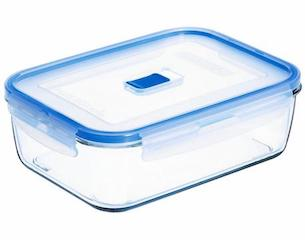

Acid Etching
This guide is an overview of how to acid etch a PCB, using muriatic acid and hydrogen peroxide.
NOTE: NYU and ITP do not want this process to happen in their facilities, for two reasons:
- If you spill acid, it can make a permanent mess
- After using acid, you need to dispose of it at waste facilities, which is difficult for NYU to coordinate
So, if you are going to be doing acid etching, follow these instructions at home, do not do this at NYU.
NOTE for 2020: this guide was made while in isolation during the NYC COVID-19 pandemic. Because of this, I did not have access to nor the ability to get the materials needed to do acid etching. Therefore, this guide is for now a compilation of old videos I've made, and tutorials online that I've learned from.
Guide Contents:
Gather the Materials
Quite a few things are needed when acid etching, all of which can easily be found online, at art-supplies stores, pharmacies, and hardware stores.
[Materials] Muriatic Acid, 3% Hydrogen Peroxide
These are the two most important materials to have, as they will be doing the actual etching. The muriatic acid can be found at hardware stores like Home Depot, and the hydrogen peroxide can be found at almost any pharmacy.
[Materials] Square Tupperware, Old Toothbrush

These will be used to hold the acid, and to rub the acid around on the surface of your PCB. Make sure your tupperware can fit your copper board, that it is sturdy, and made of either plastic or glass.
[Materials] Adhesive White Vinyl, Printer, Clothes Iron
These materials for are going the toner transfer (described below). You will want matte, white vinyl with an adhesive back, which can be bought from art supplies stores or online shops like Amazon. The clothes iron and be any type, and the printer just needs to print black and white images.
Note that instead of using vinyl, a lot of online tutorials recommend using magazine paper. This is a good option because it is readily available, however at ITP we have had some bad results using it. There are also products called Transfer Paper designed for exactly this, but they are less common to find.
Prepare the Board
Before beginning, you'll want to not only have your Eagle design finished, but I would strongly recommend using the Bantam milling machine to cut the outline (dimension) of your PCB, as well as drilling all your holes. This way, once you are done acid etching, your board will be complete, and you won't have to worry about lining it up with the milling machine or alternatively drilling/cutting by hand!
Also, the outline and holes the Bantam cuts are very helpful when aligning the design your print out with the board.
Export Your Design
What we are going to do during toner transfer (described below), is we are going to "stick" your design onto your copper board. It is like putting on a temporary tattoo. The image your are sticking to your board will start on the papaer as being backwards (flipped horizontally), so that then once you have stuck it onto your board, it will be flipped again and now be in the correct orientation.
Before exporting your copper layer as a PDF, go to the Layers menu and only select the following layers to be visible:
- Top (or Bottom) copper layer
- Vias
- Pads
- Dimension
Go to File -> Print, and select Print to File (PDF). No matter if your exporting the top or bottom layers, always have the following settings:
- Options: Black = On
- Options: Solid = On
- Scale: Scale Factor = 1
When you save an image of your design from Eagle, it gives you the option to flip the generated image horizontally. This is perfect for us, however, remember the following rule:
When exporting the TOP copper layer, always flip the exported image
When exporting the BOTTOM copper layer, DO NOT flip the exported image, keep it as normal

Why do we not flip the bottom copper layer? Because in Eagle, the bottom layer is already flipped by default. Think about it, the blue bottom copper layer is underneath your board, so when you are looking at it in Eagle, it is as if you have super-human-X-ray-vision, and are looking through the board. Therefore, the bottom blue copper layer you are looking at is actually flipped horizontally from what it will look like in the real world.
Toner Transfer
NOTE: Because I don't have the materials at home right now in isolation, I'm not able to make my own video. So instead, here is a good video demonstrating the same method that I describe here:
1) Make the Printout
Cut out a piece of the white vinyl, and stick it to a piece of printer paper. Put that paper (with the vinyl on it) into your printer, and print your design so that it lines up on the vinyl.
2) Heat with Iron
Transfering the ink to your copper board is done with heat. We will press the black ink up again the copper, then heat them up so much that the ink melts and attaches to the copper.
Before applying ink to your copper plate, make sure your board is shiny and clean. Scrub off any dirt with a scour pad, and then clean it with isopropyl rubbing alcohol and dry off.
Place your printed design face-down onto your copper place and align with any holes you might have already drilled. Once aligned, add a small piece of tape to one or two sides of the paper, so that it doesn't shift while heating.
Put the clothes iron on HIGH heat setting, and heat your toner paper/vinyl for 1-3 minutes under the iron. If you are heating a larger PCB that doesn't entirely fit under the iron, do an additional 1-3 minutes for each section of your PCB.
3) Remove Paper with Cold Water
When done heating, place the board and paper still stuck together in a tupperware container with cold water in it. Leave for a couple minutes, or until the transfer paper floats away from the copper plate. Peel back the paper, and your traces should be written in black ink on your copper plate.
What happened is you heated copper plate and ink so that it melts onto the copper. Not hot enough, and only part of your design will transfer to the copper. Too hot, and the ink will start to bubble on the copper. If you don't heat it for the right amount of time and the transfer doesn't work, simply rub off the ink with a scour pad, and start again.
3) Air-Dry and Fix Mistakes with Ink
Do not touch the toner, as it is still soft can move around. To dry the board off, use a hair dryer, and try not to let anything touch your design.
If there are any spots on your design missing some ink, you can simply use a permanent black marker to correct the mistake. You could even skip the entire toner transfer process, and simply draw onto a copper plate with permanent marker!
If you have holes drilled into your PCB, make sure you cover those holes with black permanent ink. If you do not, then the acid will leak in there and remove copper around the edges of your holes.
Acid Etching
NOTE: Because I don't have the materials at home right now in isolation, I'm not able to make my own video. So instead, here is a good video demonstrating the same method that I describe here: ONLY WATCH THE FIRST HALF OF THE VIDEO
1) Prepare board
As mentioned in the toner transfer section, you can fix any mistakes in your design with a permanent maker. Apply the marker to a dry plate, and try to spread the ink thick so it fully covers the copper.
2) Prepare acid
Measure the muriatic acid + hydrogen peroxide at a 1-2 ratio (aka 1/4 cup of muriatic acid, and 1/2 cup of hydrogen peroxide), and make sure to first add the hydrogen peroxide, then second add the muriatic acid to your tupperware container. It should be a clear color before you etch.
3) Etch and Shake
With a second container of water next to it and wearing rubber gloves, add your copper plate to the acid. Mix the acid constantly by gently lifting one side, causing a wave pattern to move back and forth. With a rubber glove on, you can remove and inspect the plates. Once they are etching, they will start turning pink or purple.
Eventually all your visible copper will disappear. How long this takes depends on the intensity of the acid. The muriatic acid mixture can be very fast right after mixing, and will eventually turn green/blue as it absorbs the copper.
4) Clean up and finish
When your board is finished etching, remove it from the acid and put it in your water container. Pour your used acid into a separate container, like a used water bottle or something else safe to hold it. That stuff is now filled with copper, and is bad for the environment and cannot simply be thrown away. You will need to bring it to your local waste disposal drop-off location
Rinse out your tupperware containers and board in the slop sink, making sure to rinse away any tiny amounts of acid that might be in the sink. Dry your board with a hair dryer, then remove the black ink with a scour pad.